Планирование сотрудников
Смены и отпуска вели в 1С, а заявки назначали в другой системе. Теперь график сам закрывает дни, когда инженер не работает.
- Продукт
- Платформа для заявок, выездных инженеров и обслуживания объектов. Web для офиса и мобильный интерфейс в поле
- Моя роль
- Единственный дизайнер, работала с бизнес-заказчиком, аналитиком и командой разработки
- Статус
- Внедрено, есть данные за год работы
Данные компании после года работы системы, по системе целиком. Моя часть — интерфейс и правила, по которым диспетчер планирует день.
Контекст
Инженеры каждый день выезжают к клиентам, и кто-то должен решить, кто куда едет и в какое время.
Компания монтирует и обслуживает оборудование у клиентов: в офисах, квартирах, отделениях банков, кафе и на складах.
Боли
Распределяет заявки и не видит реальную загрузку инженеров: сверяется с несколькими системами.
Адрес, задачу и данные по объекту приходится уточнять отдельно, они не собраны в одном месте.
Нет единой картины загрузки команды и состояния работ.
Проблема
Было: CRM, 1С и ручная координация
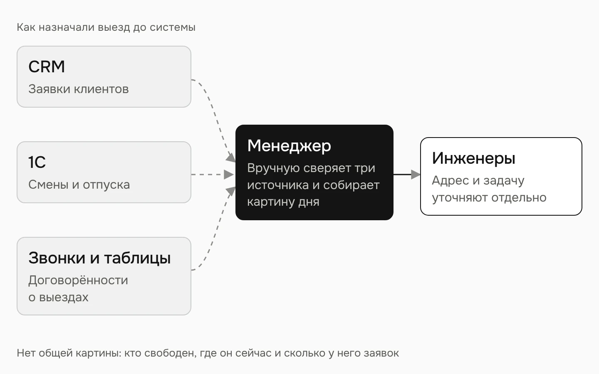
Заявки в CRM, смены и отпуска в 1С, выезды по договорённости. Чтобы назначить визит, нужно было сверить всё вручную.
Заявки, график и карта зависят друг от друга. Если инженер уходит в отпуск, это меняет и назначение новых заявок, и уже запланированные выезды.
Ключевое решение: график решает, можно ли назначить визит
Смены и отпуска вели в 1С, а заявки назначали в другой системе, не глядя на них.
Доска «люди × дни» на 30 человек. Смены 5/2, 2/2 и 3/3 считаются автоматически, отпуск, больничный, отгул и дополнительный рабочий день ставятся перетаскиванием.
График стал источником правды для карты: отпуск или выходной по смене делает день недоступным для визита.
Как выбирала решение
Я изучила решения для планирования сотрудников, включая Tempo для Jira. Мне было важно, чтобы оператор сразу видел тип и продолжительность события и мог изменять его прямо в календаре.
В качестве технической основы выбрали FullCalendar. Готовые механики создания, переноса и изменения событий адаптировали под смены, отпуска и отсутствия сотрудников.
Так удалось реализовать сложный интерактивный календарь без разработки всей механики с нуля.
Tempo Planner
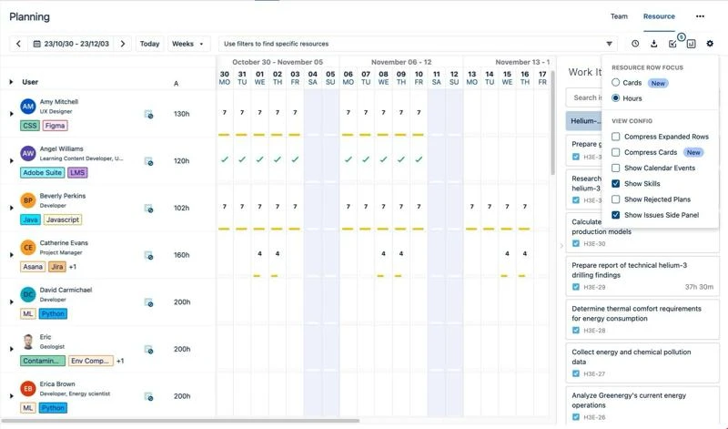
Изучала подход к планированию. Хотела сделать события более наглядными внутри сетки.
FullCalendar
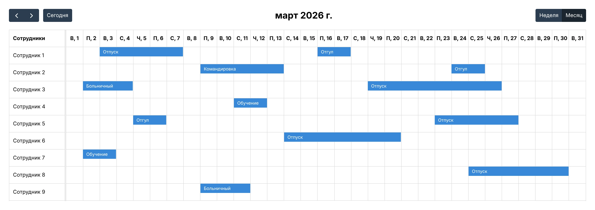
Готовая основа для интерактивного планирования.
fullcalendar.io ↗Наш календарь
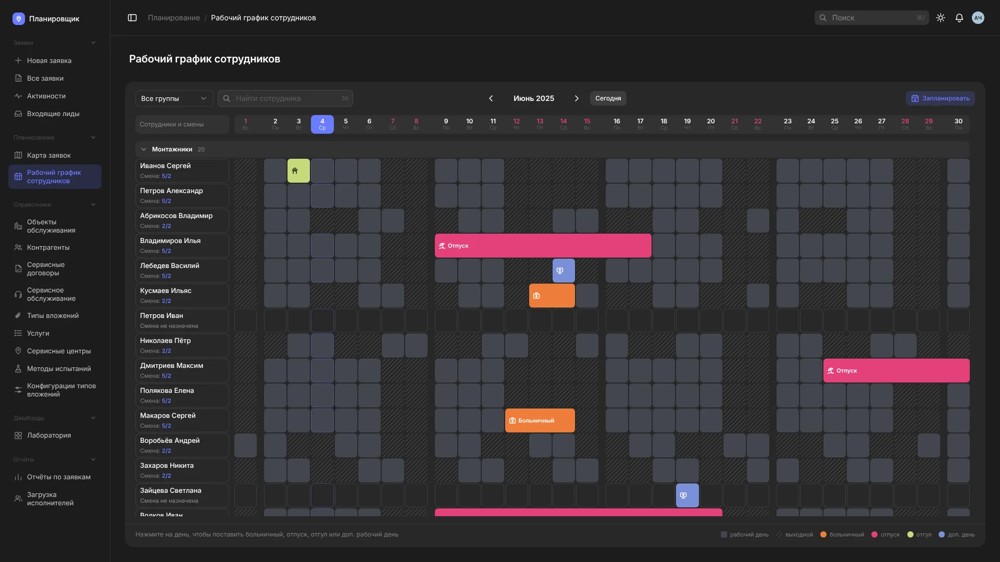
Клик по дню создаёт событиеДлительность меняется за крайТип события виден по цвету и иконкеПеренос перетаскиванием- Клик по дню создаёт событие
- Длительность меняется за край
- Тип события виден по цвету и иконке
- Перенос перетаскиванием
Месячный график сотрудников с отображением смен и событий.
Правила, а не только экраны
Самое сложное было не в экранах, а в правилах, по которым они себя ведут. Их я описала вместе с макетами.
Поставить отпуск в прототипе ↗Смены считаются сами
5/2, 2/2 и 3/3 задают рабочие и выходные дни на месяцы вперёд. Строка без смены остаётся пустой.
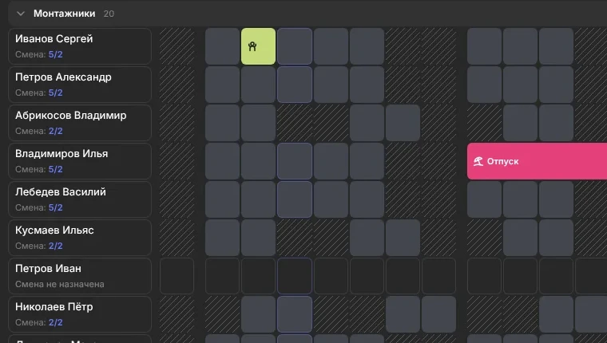
Праздники
Для смены 5/2 праздник выходной, а смены 2/2 и 3/3 идут по своему циклу.
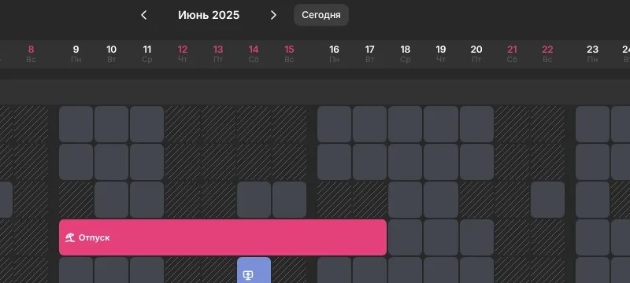
Норма отпуска
Превышение подсвечивается, но не блокируется: решение остаётся за человеком.
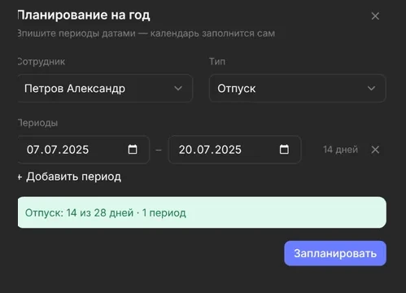
Как устроен график
Пять экранов. Картинка открывается целиком по кликуВесь отдел на одном экране: кто работает, кто отдыхает и кто в отпуске.
![График на месяц: Группы и поиск — Показать один отдел или найти человека по фамилии.; Сворачивание групп — Лишние отделы можно свернуть, чтобы видеть только нужных людей.; Сотрудник и смена — Имя открывает планирование на год, смена — настройку графика.; Без смены — Пустая строка сразу видна: человеку ещё не назначен график.; Запланировать — Вписать отпуска и отсутствия на год вперёд датами.; События — Больничный, отпуск, отгул и доп. день — цветные полосы поверх графика.; Рабочие и выходные — Голубое — рабочий день по смене, штриховка — выходной. Выходные и праздники в шапке красные.](img/explain/sch-1-dark.webp)
Клик по дню — и выбрать, что случилось.
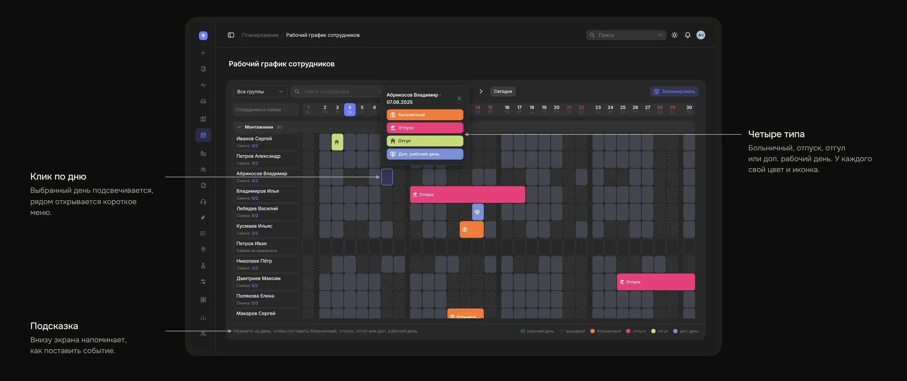
Клик по полосе открывает карточку события.
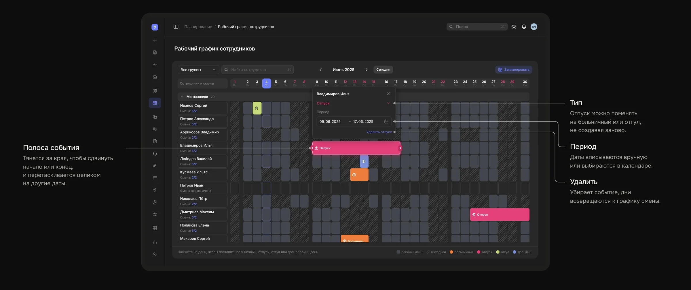
Смена задаёт рабочие и выходные дни на месяцы вперёд.
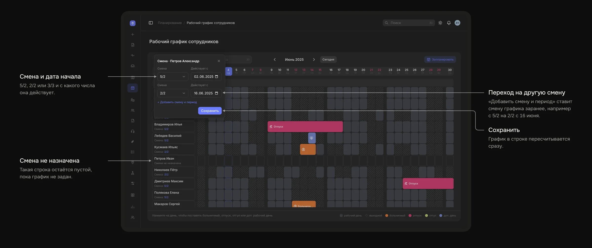
Отпуска на год вперёд вписываются датами, без кликов по каждому дню.
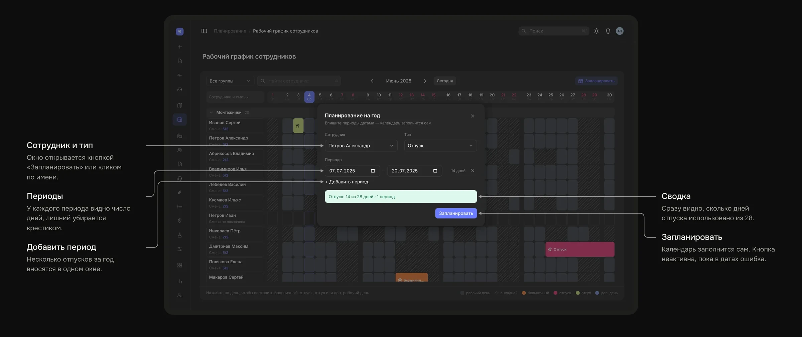
Компромисс по цветам
Первоначально календарь был выполнен в спокойных оттенках. Заказчик предпочёл яркие фирменные цвета. Я обозначила риск визуальной перегрузки, но финальное оформление выбрали с приоритетом на бренд.
Что я сделала
Единственный дизайнер, работала с бизнес-заказчиком, аналитиком и командой разработки
Рабочий график, смены и события, планирование отпусков на год, правила праздников и нормы отпуска
Макеты и интерактивный прототип с рабочей логикой
Система работает в компании
Три показателя выше, по системе целиком
Выводы
Сделать график источником правды для карты. Диспетчер не может назначить визит на день, когда инженер в отпуске или выходной по смене, и не держит это в голове.
Прогноз перегрузки команды и предупреждения о заявках, которые могут не успеть.